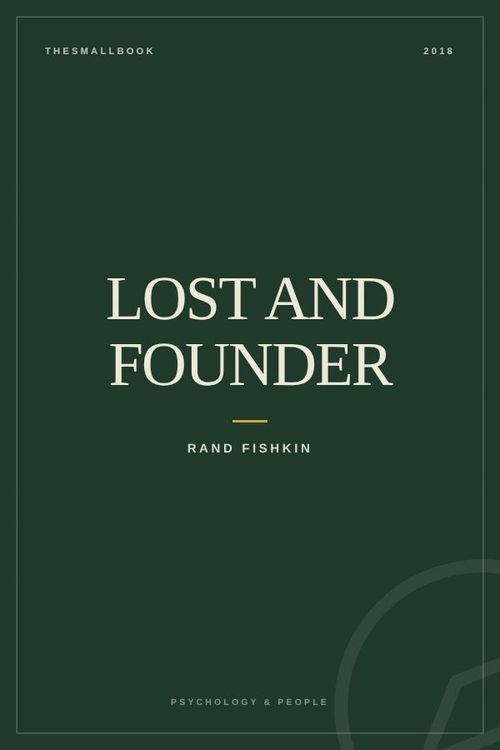

Library › Authors › Rand Fishkin
Books by Rand Fishkin
Rand Fishkin has one book in the library. Every book here is read down to the big idea, the lessons, the lines worth keeping and the actions worth taking. Start with the summary, then buy the full book if it earns a place on your shelf.

Lost and Founder: A Painfully Honest Field Guide to the Startup World
2018 · 11 min · 8 lessons
Rand Fishkin's painfully honest account of building Moz: founder depression, VC misalignment, the 'pretend growth' round he regrets, and the lies the startup myth sells.
Fishkin (Moz founder, later SparkToro) writes the anti-hero memoir of startup life: crying at his desk twice from stress, the 2013 $18 million round he took for 'pretend growth' (scaling spend without validated unit economics, which he calls his biggest mistake), VC incentive misalignment (funds need outliers, so 'boringly successful' is failure to them), co-founder equity mistakes, hiring-and-firing pain, the myth that founders who raise are winning, and his eventual step-down (the board-pressured exit that he...
Lessons in the summary
- The Fundraise Is Not the Win
- Venture Incentives Are Not Your Incentives
- Founder Depression Is the Norm, Not the Exception
- Board Seats Are Governance, Not Cheerleading
- Hire Slow, Fire Fast, and Never Confuse the Two
- Bootstrapping Is a Strategy, Not a Consolation Prize
- Transparency Is a Trust Multiplier When It's Real
- The Myth Sells Tickets; the Distribution Pays Salaries
Lines worth keeping
- The startup world rewards the people who tell the biggest lies about their progress.
- Venture capital is rocket fuel, and most startups don't have a rocket. They have a really nice car.
- I cried at my desk twice. Both times I thought I was the only founder who'd ever done that. I was wrong.
Questions Rand Fishkin helps answer
Read nearby authors next
- Devdutt Pattanaik 5 books
- Malcolm Gladwell 5 books
- A.P.J. Abdul Kalam 4 books
- Adam Grant 4 books
- Chip Heath & Dan Heath 4 books
- Daniel H. Pink 3 books
- Gurcharan Das 3 books
- Jonathan Haidt 3 books
Questions Rand Fishkin helps answer
Where should I start with Rand Fishkin? Start with Lost and Founder: A Painfully Honest Field Guide to the Startup World: Rand Fishkin's painfully honest account of building Moz: founder depression, VC misalignment, the 'pretend growth' round he regrets, and the lies the startup myth sells.